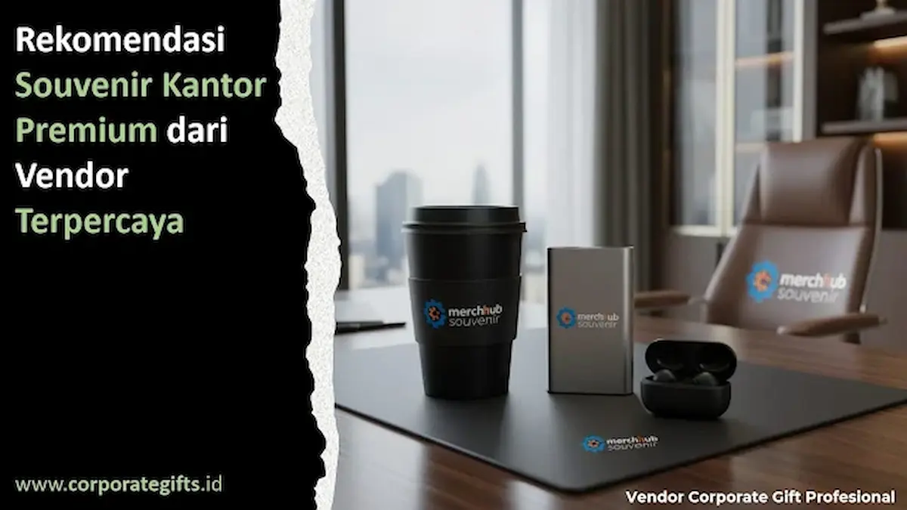

Corporate Gifts ID - Souvenir kantor premium adalah hadiah korporat berbahan berkualitas tinggi yang dirancang khusus untuk memperkuat citra profesional perusahaan. Baik dalam agenda internal seperti penghargaan masa kerja karyawan maupun event eksternal berupa temu mitra bisnis dan promosi brand, mutu cinderamata menjadi cerminan langsung reputasi instansi. Kualitas hasil akhirnya sangat bergantung pada jenis souvenir kantor premium yang dipilih serta rekam jejak penyedia yang memproduksinya.
Di balik tampilan eksklusif dan kemasan yang elegan, keberhasilan suatu cinderamata sangat bertumpu pada kompetensi vendor pelaksana. Memilih mitra pengadaan souvenir kantor terpercaya menjadi fondasi penting agar korporasi memperoleh barang bermutu tinggi, ketepatan jadwal kirim yang terjamin, serta efisiensi anggaran pengadaan secara berkesinambungan.
Poin Kunci Pemilihan Souvenir Kantor Premium:
- Branding Bernilai Tinggi: Cinderamata premium merefleksikan standar profesionalisme dan kredibilitas institusi di hadapan klien.
- Kombinasi Fungsional & Estetika: Hadiah seperti tumbler SUS304, agenda kulit, dan powerbank fast charging terbukti aktif digunakan harian.
- Legalitas & Akuntabilitas: Vendor terpercaya selalu melengkapi transaksi B2B dengan Faktur Pajak PPN dan nota resmi perusahaan.
- Sampel Nyata (Mock-up): Penyedia berpengalaman senantiasa menyediakan prototipe pra-produksi guna memastikan kepuasan visual sebelum produksi massal.
Pentingnya Memilih Vendor Souvenir Kantor Berkualitas
Banyak manajemen perusahaan menyadari bahwa rekanan vendor memegang peran vital dalam kesuksesan setiap event korporasi. Vendor yang berintegritas tinggi tidak sekadar menyajikan katalog produk yang tampak menarik, melainkan memiliki pemahaman mendalam terhadap karakter merek (brand identity) dan kebutuhan teknis klien.
Dalam tata kelola pengadaan barang korporat, variabel seperti mutu material bahan baku, kehalusan teknik finishing (seperti laser grafir atau deboss timbul), serta layanan purna jual merupakan aspek mutlak yang pantang diabaikan. Vendor dengan manajemen lini produksi tertata rapi akan menjamin setiap produk terkirim tepat waktu sesuai batas tenggat acara tanpa menurunkan standar mutu sedikit pun.
Di samping itu, penyedia jasa berpengalaman lazimnya menyediakan sesi konsultasi rancang grafis serta rekomendasi kurasi produk sesuai tema kegiatan. Mereka piawai menyelaraskan palet warna korporat, proporsi peletakan logo, hingga struktur kemasan box magnetik agar bingkisan benar-benar memancarkan wibawa instansi.
Ragam Souvenir Kantor Premium yang Populer
Koleksi souvenir kantor modern kini bertransformasi menjadi beragam varian yang fleksibel menyesuaikan preferensi gaya kerja profesional saat ini. Sejumlah kategori berikut senantiasa menjadi pilihan utama manajemen korporat dan instansi terkemuka:
- Executive Gift Set Eksklusif: Perpaduan harmonis antara pulpen rollerball metal berukir nama, buku agenda berbahan PU leather elegan, serta tumbler stainless premium yang ditata rapi dalam kotak hard box custom bermagnet.
- Powerbank dan Smart Digital Gadget: Sangat relevan untuk perusahaan teknologi, lembaga perbankan, dan kaum profesional dinamis yang menuntut konektivitas mobilitas kerja tinggi.
- Merchandise Ramah Lingkungan (Sustainable Gifts): Botol minum berbahan baku daur ulang, buku catatan kertas daur ulang, hingga tas kanvas organik yang menjadi representasi kepedulian lingkungan (ESG) perusahaan.
- Souvenir Dekorasi Meja Estetis: Plakat akrilik potong presisi, jam meja multifungsi, hingga desk organizer kulit meja kerja yang kerap dijadikan simbol penghargaan masa bakti eksekutif.

Proses kurasi dan pengecekan detail kemasan merchandise kantor guna memastikan mutu cetak logo yang sempurna.
Tabel Komparasi Produk Souvenir Kantor Eksklusif
Untuk memudahkan penentuan alokasi anggaran dan jenis produk yang tepat sesuai audiens target, perhatikan tabel perbandingan berikut:
| Kategori Souvenir | Karakteristik & Material | Teknik Branding | Target Penerima Ideal |
|---|---|---|---|
| Executive Director Set | PU leather deboss, pulpen metal, tumbler SUS304 | Laser grafir, hot stamping emas/perak | Dewan direksi, mitra strategis B2B, tamu kehormatan VVIP |
| Smart Powerbank & Gadget | Kapasitas 10.000mAh, support PD Fast Charge | UV print resolusi tinggi, sablon presisi | Klien muda, peserta seminar teknologi, manajer operasional |
| Eco-Friendly Stationary | Kertas daur ulang FSC, cover gabus natural/bambu | Pad print ramah lingkungan, grafir kayu | Kampanye CSR, institusi pendidikan, forum keberlanjutan ESG |
| Tumbler Vacuum Insulated | Stainless steel SUS304 isolasi vakum tahan 12 jam | Grafir laser 360 derajat, print UV rotary | Karyawan internal, peserta gathering perusahaan, suvenir promosi |
Keunggulan Vendor Souvenir Kantor Terpercaya untuk Perusahaan
Penyedia merchandise yang kredibel senantiasa menaruh kepuasan pelanggan sebagai tolok ukur kesuksesan utama. Keunggulan esensial dari vendor berintegritas berakar pada transparansi penawaran harga, profesionalitas tata kelola, dan komitmen tinggi terhadap pengendalian kualitas produk.
Vendor semacam ini menerapkan sistem kendali mutu (quality control) bertahap sehingga setiap unit souvenir terbebas dari goresan fisik, cacat cetak, maupun kebocoran kemasan. Layanan konsultasi desain juga disediakan secara cuma-cuma demi memfasilitasi penyesuaian visual logo agar selaras dengan pedoman identitas merek korporat. Bahkan, sebagian besar vendor tingkat atas memberikan fasilitas produksi sampel fisik sebelum tahapan produksi massal berjalan guna memastikan akurasi ekspektasi tim pengadaan.
Keunggulan lainnya terletak pada fleksibilitas kuantitas dan harga. Vendor yang berpengalaman mengerti bahwa skala anggaran setiap divisi berbeda-beda, sehingga mereka mampu merumuskan alternatif paket cinderamata yang hemat biaya namun tetap mempertahankan kesan mewah.
Kenapa Harus Memilih Vendor Profesional?
Membangun kerja sama jangka panjang dengan vendor souvenir profesional mendatangkan faedah substantif yang melampaui sekadar pembelian produk fisik. Menjalin kemitraan dengan penyedia resmi memberikan ketenangan pikiran bagi tim HRD maupun tim procurement perusahaan melalui prosedur kerja yang terstruktur dan terukur.
Penyedia berpengalaman didukung oleh portofolio riil yang terverifikasi, alamat kantor operasional yang jelas, serta rekam jejak kepuasan dari berbagai perusahaan multinasional dan lembaga BUMN. Kolaborasi semacam ini meminimalisasi risiko keterlambatan pengiriman pada hari H perhelatan penting serta menghindari kerugian anggaran akibat produk bermutu buruk.
Kesimpulan: Kemitraan Tepat untuk Cinderamata Korporat Berkelas
Souvenir kantor premium berperan sebagai jembatan strategis dalam mengukuhkan citra profesional perusahaan di mata karyawan, klien, dan pemangku kepentingan. Kendati demikian, daya tarik dan fungsi produk sangat bergantung pada ketepatan pemilihan mitra penyedia yang memproduksinya.
Memilih vendor bukan sekadar mencari penawaran harga terendah, melainkan tentang membangun relasi kemitraan saling percaya yang berorientasi pada nilai jangka panjang. Dengan menggandeng vendor souvenir kantor terpercaya dan berdedikasi tinggi, setiap item cinderamata yang diserahkan akan menjelma menjadi representasi nyata dari dedikasi dan kualitas brand korporasi Anda.
Pertanyaan Seputar Souvenir Kantor Premium (FAQ)

Ditulis oleh: Sholikhatun Nikmah
Creative Product Designer & Bespoke Packaging ConsultantSpesialis desain merchandise korporat, kurasi souvenir promosi premium, teknik cetak kustom logo, dan konsultasi kemasan eksklusif di CorporateGifts.ID. Berpengalaman mendampingi ratusan instansi dan korporasi dalam memproduksi cinderamata branding fungsional.
Lihat Profil Lengkap & Panduan Lainnya